로그인 화면을 대조하고, 시안에 반영했어요.
조회수 표기, 메뉴 계층, 채널 편집과 공개 결과의 연결을 정리했습니다.
53치지직 캡처19Twitch 캡처750시안 화면 폭 검사
캡처 수는 로딩·팝오버·차단 상태를 포함합니다. 모든 서비스 기능의 조작 검증 수를 의미하지 않습니다.
최신 시안
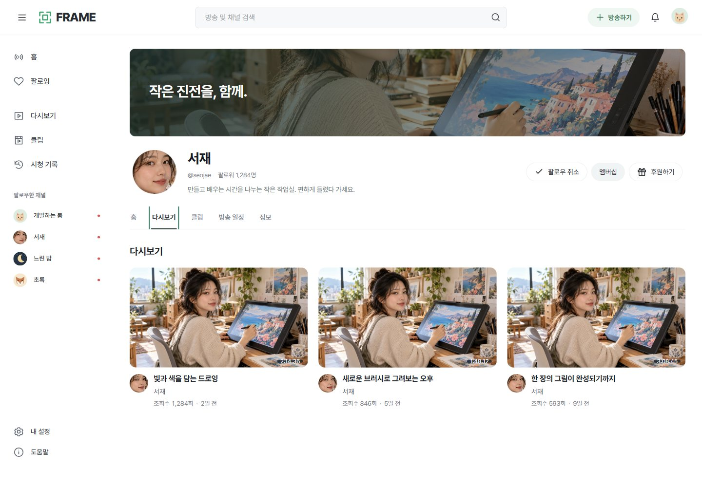
조회수 1,284회 · 2일 전
실행 시안 →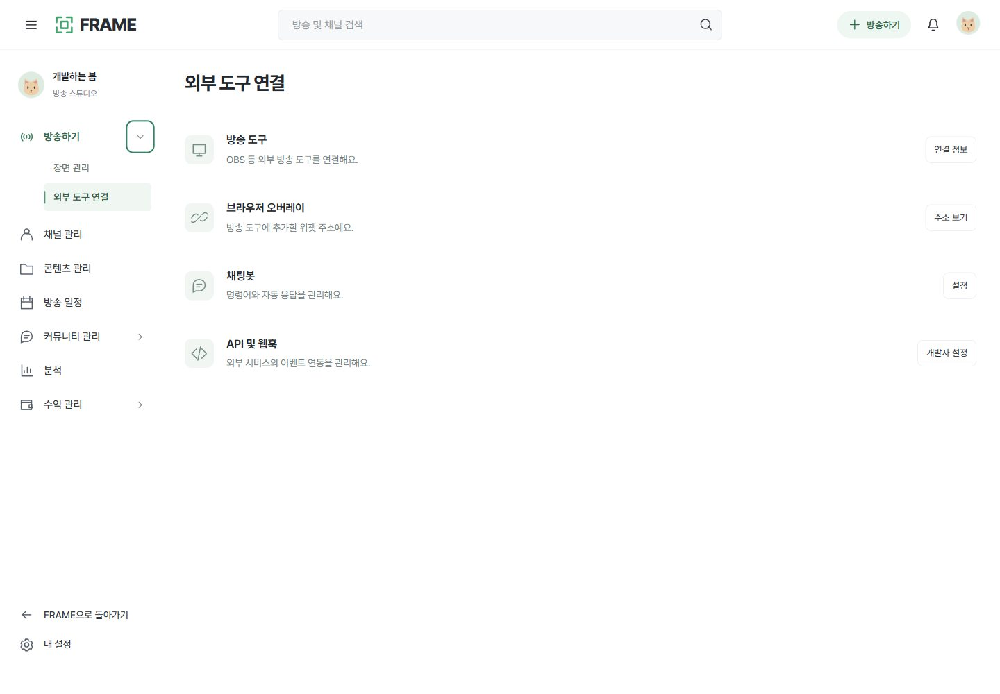
페이지 이동과 접기 버튼을 구분
실행 시안 →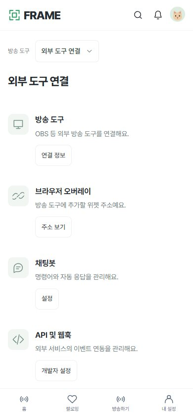
현재 그룹 안에서 화면 전환
실행 시안 →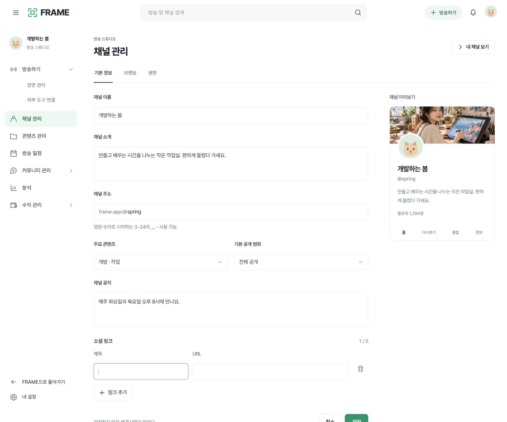
제목·URL, 추가·삭제·저장
실행 시안 →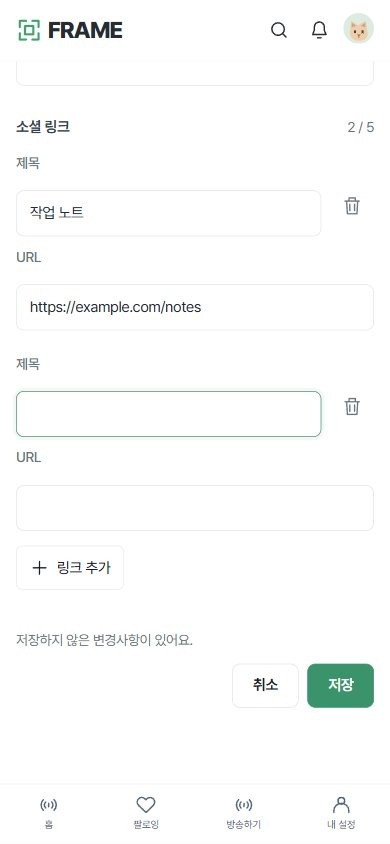
입력과 저장 영역 가림 확인
실행 시안 →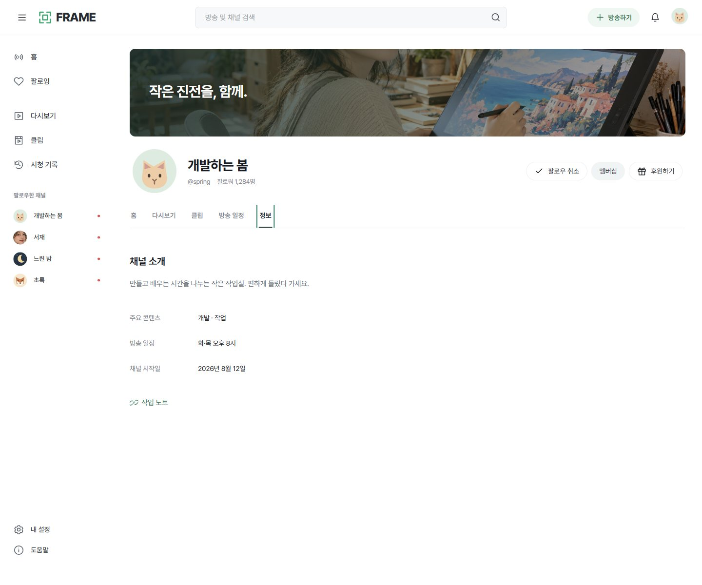
저장된 소개와 링크 사용
실행 시안 →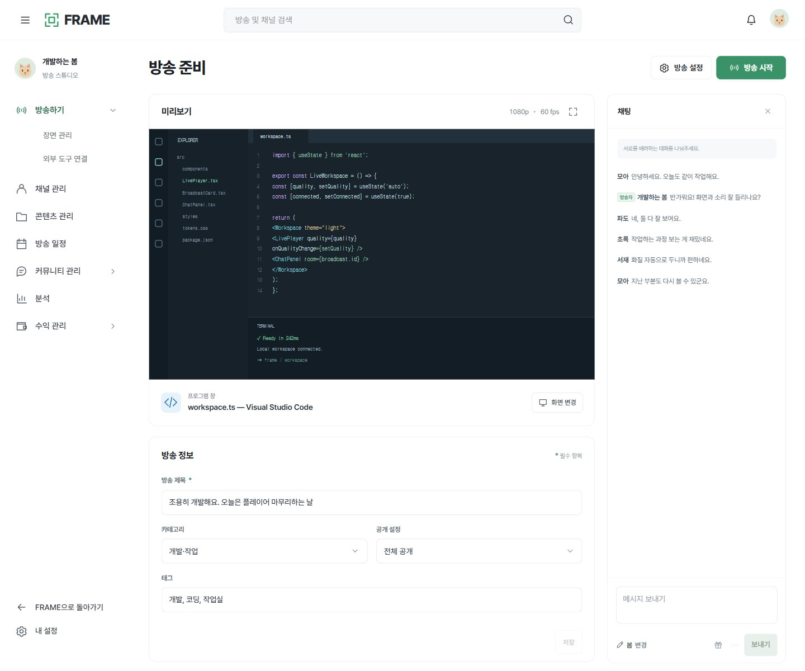
화면·방송 정보·채팅의 기존 흐름
실행 시안 →
기존 영상·오디오·녹화 제어 유지
실행 시안 →방송 준비와 설정의 구분
추가 조사에서는 두 서비스의 실제 방송자 대시보드에 접근했습니다. 치지직 16장과 Twitch 24개 화면 상태를 확인했고, 준비·연결·운영 구조와 시안 보완을 방송자 화면 검토에 정리했습니다. 실제 방송·외부 설정 저장·송출 연결 시험은 진행하지 않았습니다. 기존 영상·화질 제어·실제 앱 코드는 유지했습니다.
어디까지 확인했는지
치지직 · 공개 탐색과 로그인 메뉴
| 영역 | 확인한 내용 | 범위 |
|---|---|---|
| 공개 탐색 | 전체 방송-라이브 / 전체 방송-동영상 / 인기 클립 / 카테고리 / 편성표 / 팔로잉 | 직접 열람 · 하위 탭 전체 클릭은 아님 |
| 개인 설정 | 프로필 / 프로필 편집 / 설정 / 차단 유저 관리 / 관심 없음 관리 / 프로필 정보 공개 설정 / 연결된 계정 관리 / 이용 동의 관리 / 라운지별 알림 설정 / 오리지널 시리즈별 알림 설정 | 직접 열람 · 값 변경 없음 |
| 채널 | 홈 / 동영상 / 동영상-지난방송 / 클립 / 커뮤니티 / 커뮤니티 글쓰기 / 글쓰기 설정 / 정보 / 채널 관리 / 소셜 링크 추가 편집 | 직접 열람 · 저장/게시 없음 |
| 채널 관리 | 기본 정보: 프로필 이미지/닉네임/채널 소개 / 채널 정보: 소셜 링크 최대5개 / 채널 홈 관리: 배너 최대10개/영상 상단 고정/미션후원 목록 노출 | 직접 열람 · 개인 원본은 로컬 보관 |
| 스튜디오 | 방송 준비·정보·채팅·인코더 연결·방송 중 관리 | 추가 조사 완료 · 방송자 검토 보드 참조 |
Twitch · 설정과 공개 채널
| 영역 | 확인한 내용 | 범위 |
|---|---|---|
| 프로필 메뉴 | 채널 / 대시보드 / 설정 / 구독 / 드롭스 등 | 메뉴 목록 확인 |
| 일반 설정 | 프로필 / Prime 특전 / 보안 및 개인정보 보호 / 알림 / 연결 / 콘텐츠 기본 설정 / 패밀리 센터 | 직접 열람 · 값 변경 없음 |
| 공개 채널 | 홈 / 정보 / 클립 (7일/전체) / 동영상 / 일정 | 직접 열람 · 동영상/클립은 빈 상태 |
| 방송자 메뉴 | 홈 / 방송 관리자 / 설정-채널 / 설정-방송 | 추가 조사에서 직접 열람 · 방송자 검토 보드 참조 |
| 초기 조사에서 차단된 메뉴 | 분석 / 커뮤니티 / 콘텐츠 / 수익 창출 / 검토 / 시청자 보상 / 함께 방송 / 방송 도구 / 확장 프로그램 | 후속 방송자 조사 범위를 별도 보드에 기록 |
개인 설정·연결·보안·활동 원본은 로컬 연구 폴더에만 보관하고 이 보드에는 복사하지 않았습니다.
공개 화면 레퍼런스
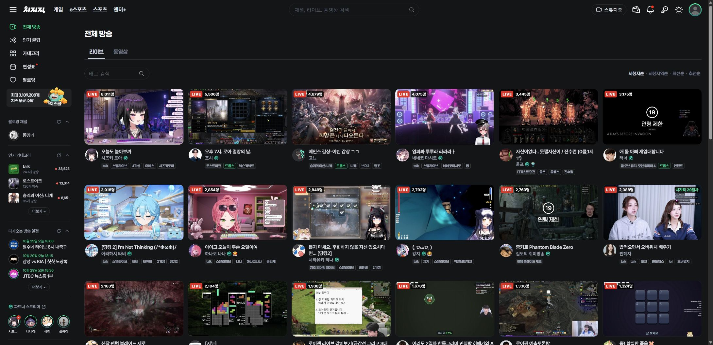
전체 방송: 라이브/동영상 탭, 정렬, LIVE와 정확한 쉼표 시청자 수, 제목·채널·태그 위계
실제 서비스 열기 →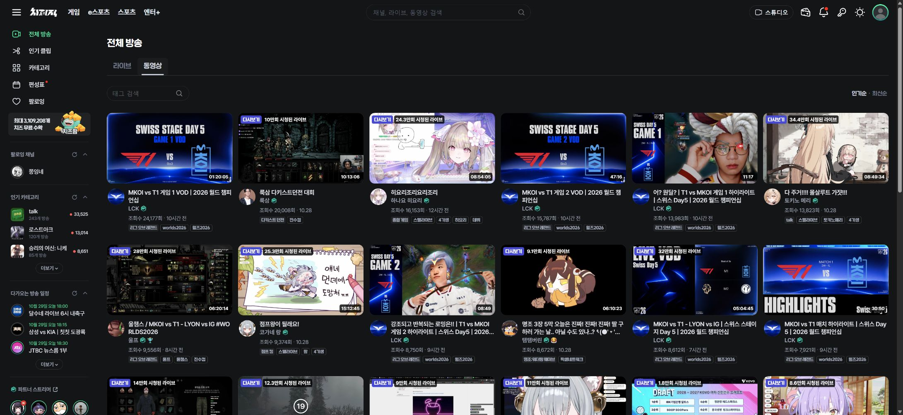
동영상 카드: 조회수 정확값과 상대시간/날짜, 썸네일 위 라이브 누적횟수는 만회 축약
실제 서비스 열기 →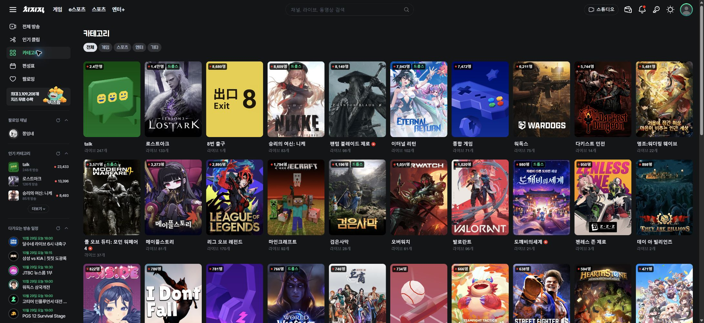
카테고리 최종 목록과 전체/게임/스포츠/엔터/기타2차탭
실제 서비스 열기 →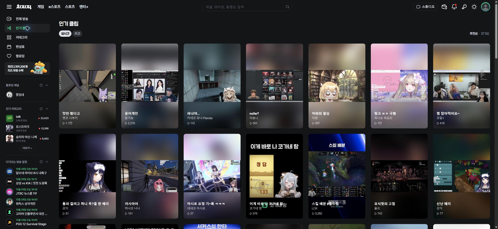
인기 클립 최종 카드 목록: 실시간/주간과 추천/인기 하위탭
실제 서비스 열기 →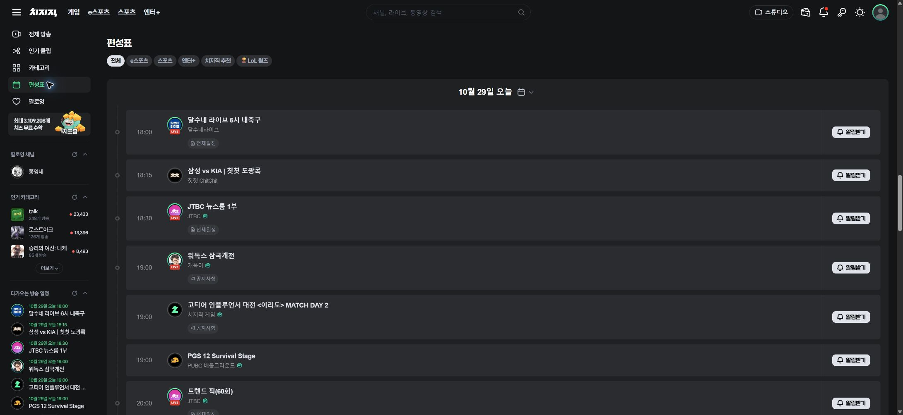
편성표 최종 화면: 날짜 묶음/채널·시간·방송명, 전체 분류
실제 서비스 열기 →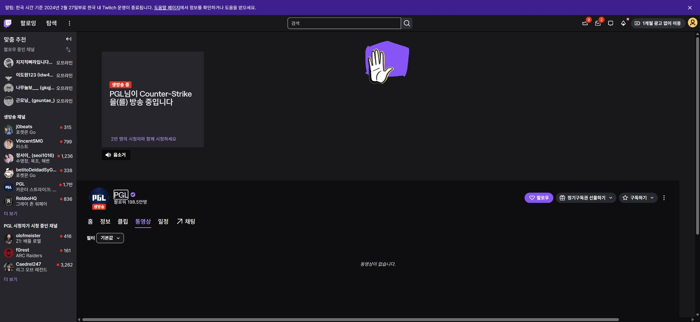
공개 채널 > 동영상
실제 서비스 열기 →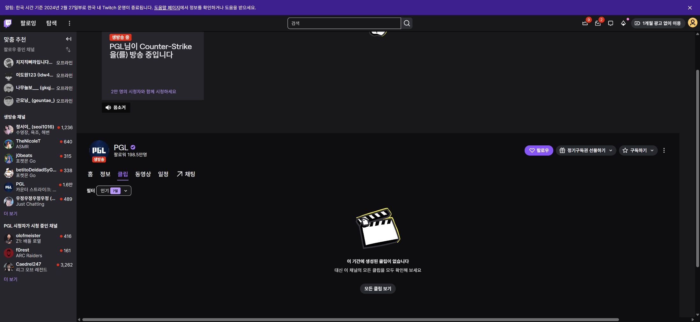
공개 채널 > 클립
실제 서비스 열기 →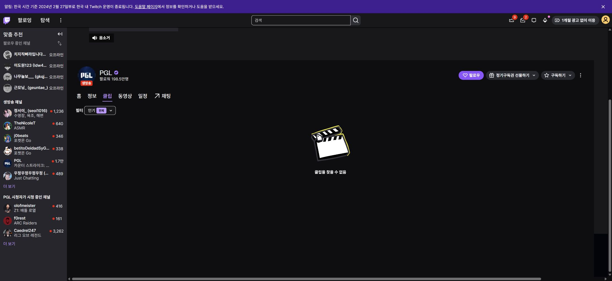
공개 채널 > 클립 > 전체 기간
실제 서비스 열기 →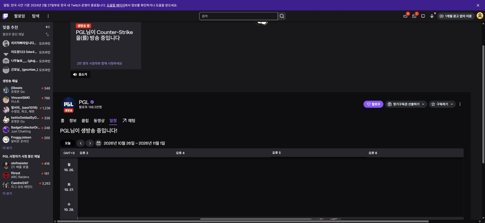
공개 채널 > 일정
실제 서비스 열기 →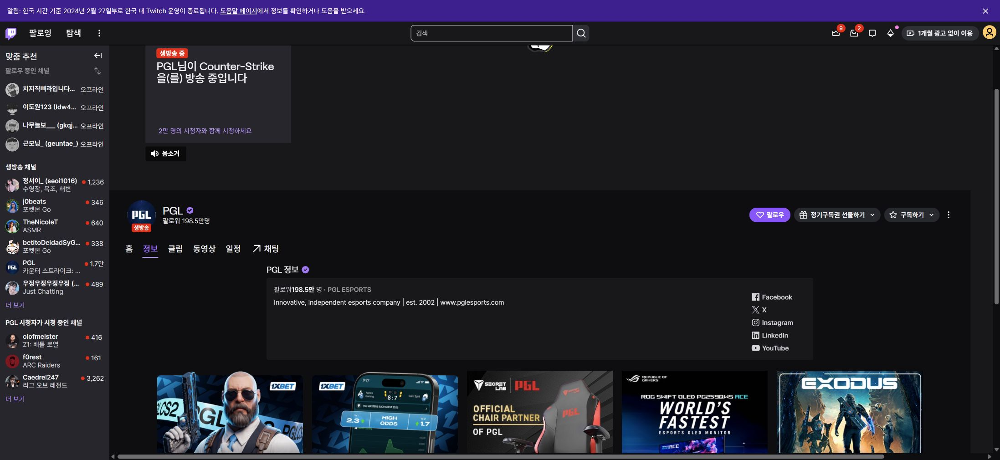
공개 채널 > 정보
실제 서비스 열기 →